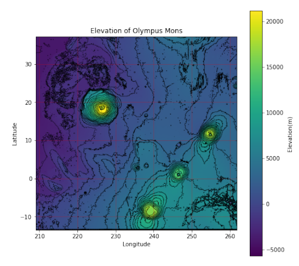

The course focused on Python and data analysis techniques used in modern astronomy.
This is one of the more visually interesting assignments using altitude to color a map of Olympus Mons, a volcano on Mars.
This course focused on conceptual discussion of the topics mentioned in the title.
Our final project was to present a topic building on those brought up in the course. Our group chose to discuss white holes.
This was a final project where we were required to make a tool using the data structures discussed in the class. My group chose to use a database of music tags to analyze genres.
The project is available to view on my github here.